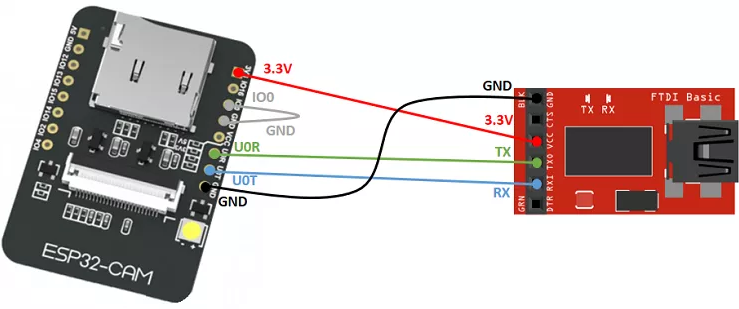
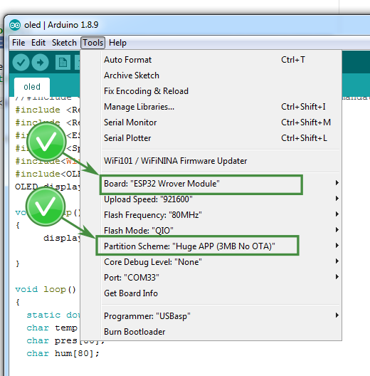

image source Rui Santos
Programming ESP32_CAM is little bit tricky
However here is a good tutorial showing how to upload your sketch and install needed boards into your ArduinoIDE:
Tutorial by Rui Santos
You will need to follow Install the ESP32 add-on and ESP32-CAM Upload Code section to be able to upload your code.
to upload your code You need to select configuration:

Upload procedure:
- set everything in arduino IDE as at screen
- connect
gpio-0 to ground
- click restart button at ESP
- upload code and waits to finish
- unplug
gpio-0 from ground
- click restart button at ESP
You will generate the code in next step.
After uploading the code remember to unplug Gpio 0 from the ground and click reset button on ESP